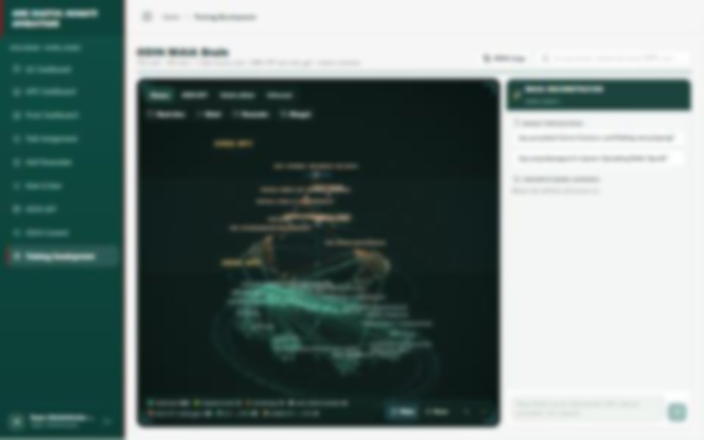

ODIN Brain: connecting cost to process knowledge
ODIN Brain is a knowledge graph that links cost issues to the production knowledge behind them: process parameters, how they influence each other, and the plant's troubleshooting know-how. The AI uses it to reason from a business problem to practical actions, and engineers use it to explore and maintain that knowledge.

Blurred: confidential dataTwo sides, one graph
The graph shows the business side and the operations side together, so a cost issue can be followed down to the process.
Cost and margin
Margin, cost components and the production measures that drive them.
Process knowledge
Process parameters, their cause-and-effect relations and the plant's know-how.
Trustworthy by design
Only documented relations are used, nothing is inferred. Relations that are still under review are clearly marked, and links that are not cause-and-effect are kept out of the AI's reasoning.
AI assistant
A chat beside the graph lets engineers explore and update the knowledge, and the paths it uses light up in 3D.
Explore and explain
Find a topic, follow causes and effects, and see which settings can influence an issue.
Review before saving
The assistant can suggest changes to the knowledge, but nothing is saved until a person confirms it.
Easy to undo
Every saved change can be reversed with one click.
Explainable recommendations
For each recommendation sent to the shop floor, ODIN Brain can show the path the AI followed, from the issue to the suggested action, directly in the 3D graph.
The 3D view
- Custom WebGL graphics built with three.js
- Rotate, pan and zoom with the mouse, buttons or keyboard
- Animation turns off for people who prefer reduced motion
- The graph refreshes by itself when the knowledge changes
What I built
The whole module: the graph model, the 3D view, the AI assistant and its tools, the review-and-undo flow, and the link between the margin analysis and the process knowledge.